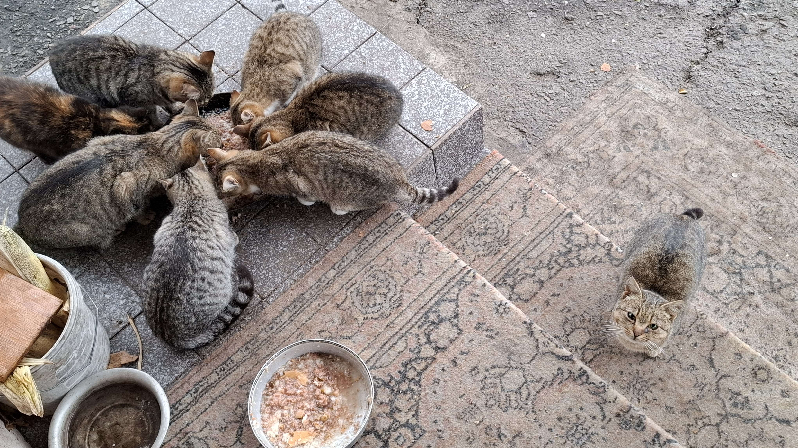
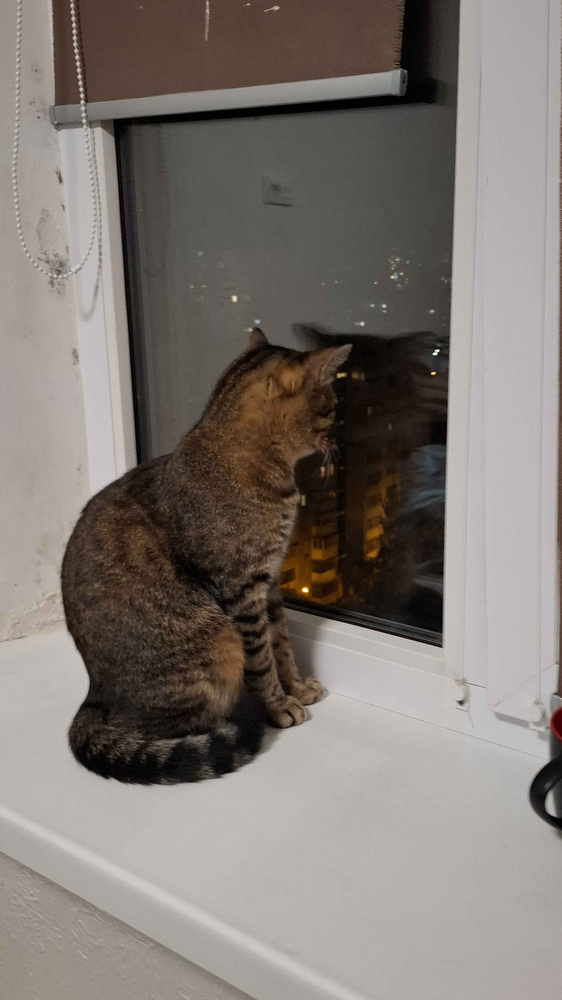
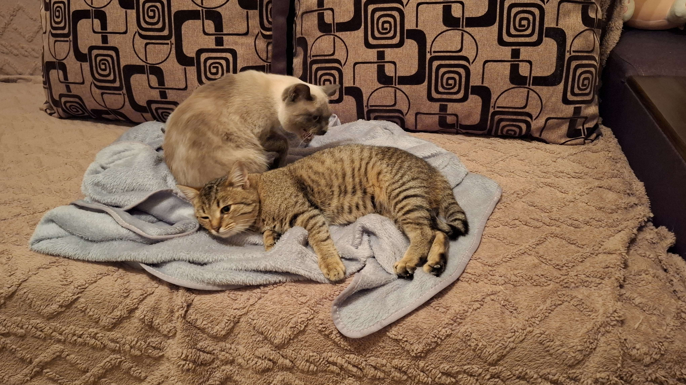
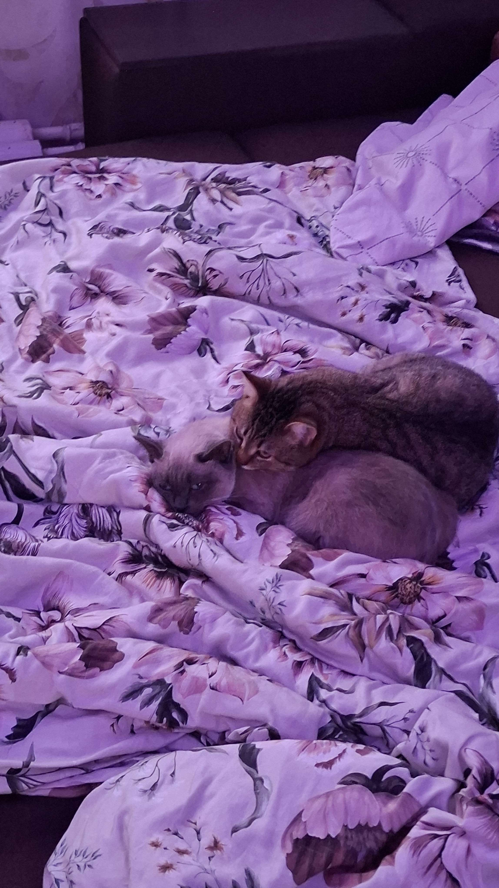
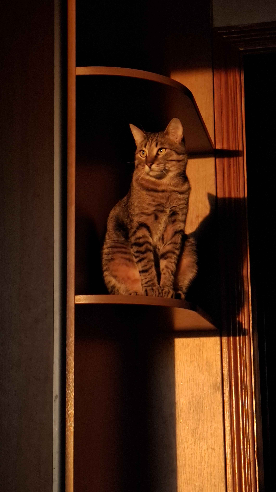

Основна інформація
Котика звуть Сем, йому 1.5 років, зріст становить 70 сантиметрів, від хвоста до вух, важить біля 4 кілограмів. Народився у великій котячій сім'ї, в нього є 6 братів та сестер.

Вподобання та поведінка
Сем любить їсти корм прямо з пакета, та нюхати усе що їдять господарі. Він обожнює гратися з тріскучими іграшковими мишками та може довго бігати за ними по квартирі. Йому дуже цікаво нюхати все, що їдять господарі, навіть якщо сам він це їсти не збирається. Спати Сем найбільше любить на верхньому поверсі котячого будиночка, звідки можна спостерігати за всім навколо. Коли йому не вистачає уваги, Сем починає бігати по квартирі, намагаючись привернути до себе увагу господарів. Також він дуже любить, коли його беруть на руки та носять по квартирі. Ще Сем любить дивитися у вікна, на машини, що їздять вулицею, та пташок.

Новий дім

Коли Сем приїхав до нового дому, там на нього вже чекала сусідка на ім'я Мурка. Спочатку вона поставилася до нього негативно та насторожено, але Сем не відповідав їй агресією — ніколи не шипів і не нявкав у відповідь, а лише муркотів. Згодом Мурка звикла до Сема, і вони швидко поладнали. Здавалося, Сем муркотів у будь-якій ситуації, тому поступово його присутність перестала сприйматися як загроза. Після цього Сем почав освоюватися в квартирі: досліджував кімнати, знайомився з новими місцями та поступово звикав до господарів. У нього були проблеми зі здоров'ям, але господарі подбали про нього та вилікували всі його хвороби. Тепер Сем повністю освоївся в новому домі — він активний, здоровий і щасливий кіт, який любить гратися, досліджувати квартиру та проводити час із господарями.

Галерея
-
